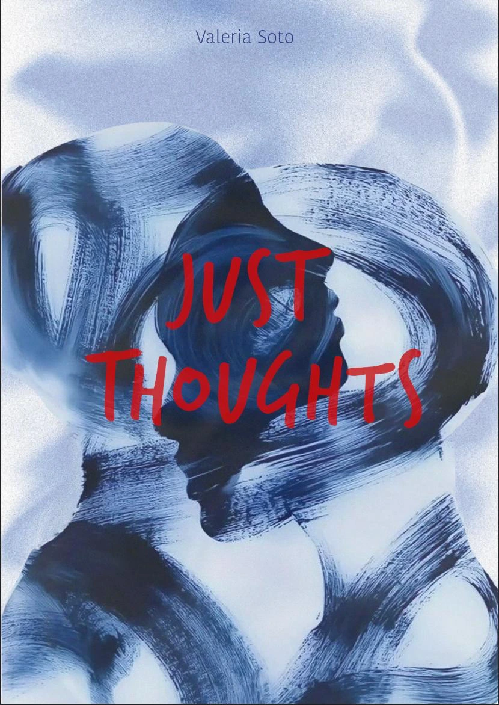

Valeria Soto Ramirez
Just Thoughts
Rehearsal
56 (written by now)
This book is composed of a collection of feelings and thoughts that have passed through my mind over time. Each text represents a reflection of my experiences and contemplations, capturing moments of introspection and personal exploration.
The purpose of these pages is not to change anyone's opinion or impose a particular view on any subject. Instead, I aim to offer another perspective—a window into how I have interpreted and understood the world around me. Each piece is an invitation to contemplation, an encouragement for readers to explore their own view of the world through mine.
I hope that, as you move through these words, you find echoes of your own passions and reflections, and that you discover new ways of seeing and understanding different aspects of life. This book is, at its core, an open dialogue—a space where each reader can find their own interpretation and perhaps uncover something new about themselves.